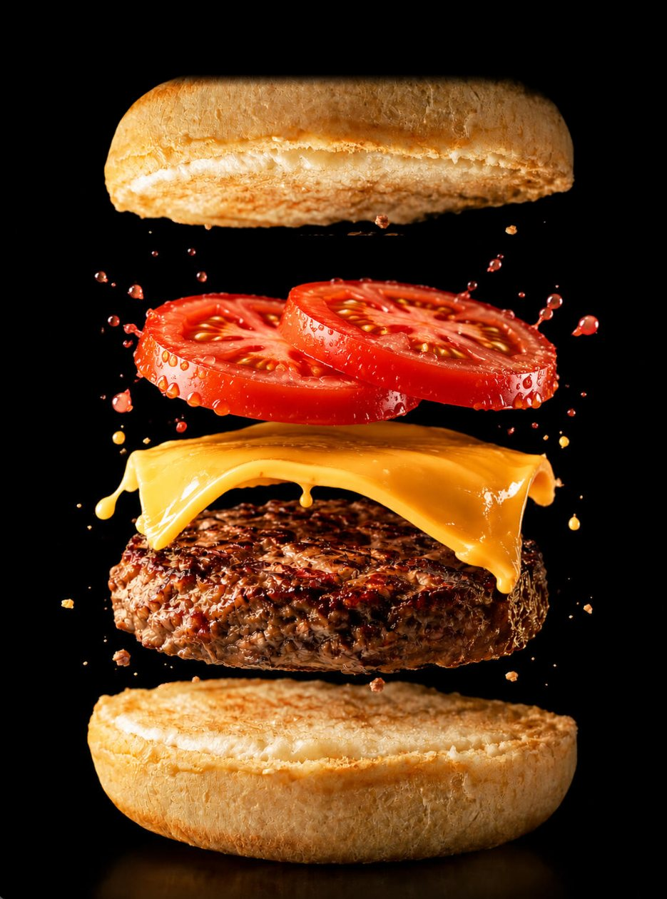
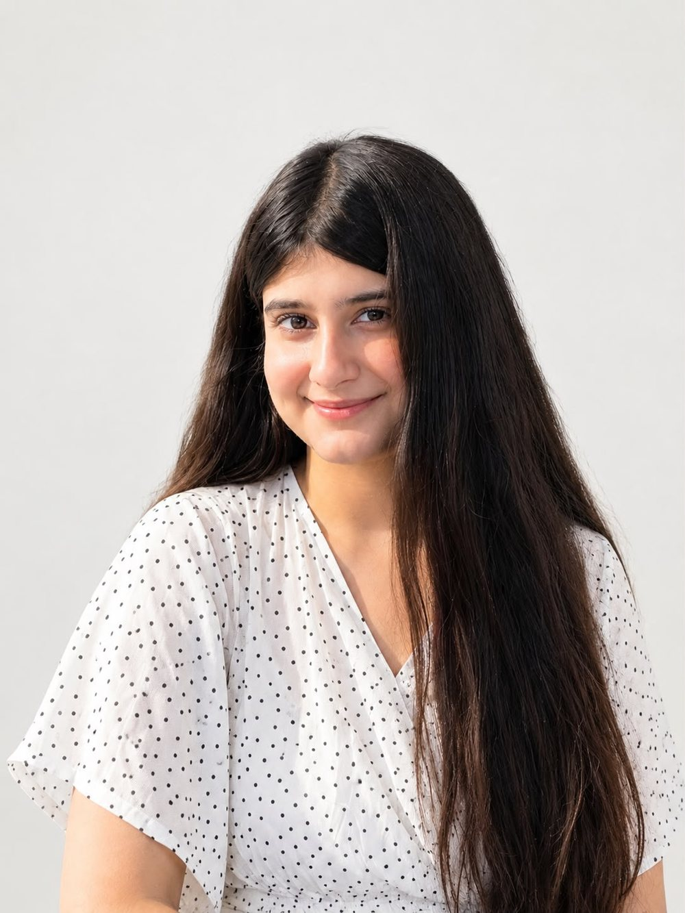
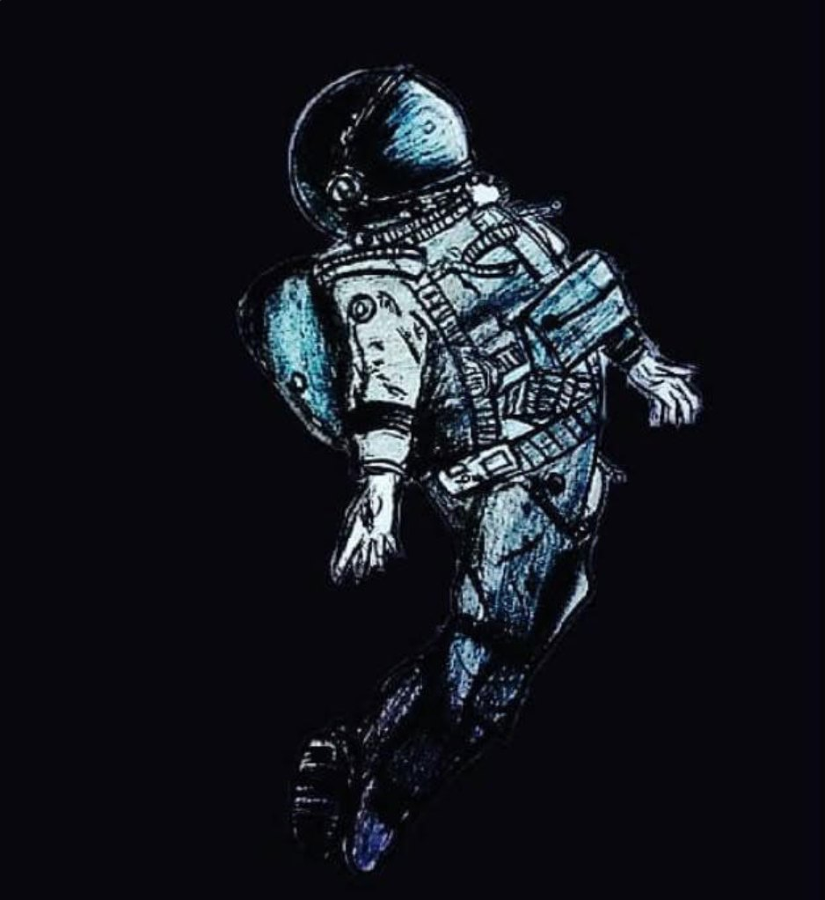
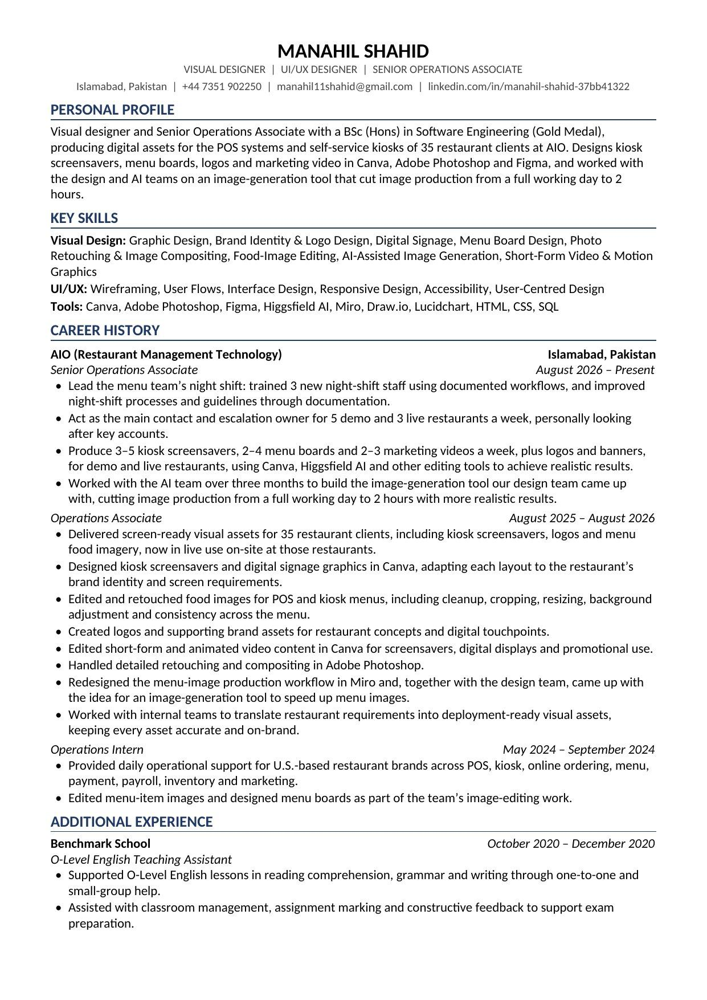
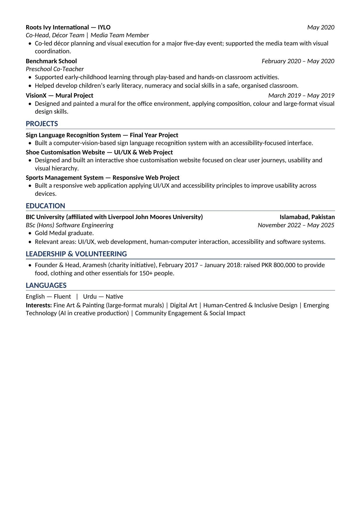

AIO | Aug 2025 to present
Making food look as good as it tastes
Screens for 35 restaurants across the US, each designed to make the food look appetising and stay true to the restaurant's own brand.
On the menu this week
Every week
Graphic Designer | Digital Signage and Menu Design
I design the screens restaurant customers see every day: kiosk screensavers, digital menu boards, logos and marketing videos, now live for 35 restaurant clients across the US. Software Engineering graduate, Gold Medalist and painter.
Senior Operations Associate at AIO, Islamabad

01
Skills and tools
Drag the globe to rotate it. Choose a type of skill to see everything in it, and where I've used each one.
Choose a type above, or select any point on the globe.
02
Selected work
My main work first, then the projects that shaped it. Open any of them to read the brief, my role, how I approached it and the result.
AIO | Aug 2025 to present
Screens for 35 restaurants across the US, each designed to make the food look appetising and stay true to the restaurant's own brand.
On the menu this week
Every week
03
Creative process
Give me a blank canvas and a little imagination, and I'll find a way to make something out of it. I'm not afraid to try something different, make mistakes or start over until it feels right.
Turn the restaurant's requirements into a clear plan, with the internal team.
Start from the restaurant's own branding and the screens the design will run on.
Play with colours, layouts and type until an idea catches the eye.
Retouch and composite in Photoshop so the food looks appetising and consistent.
Hand over deployment-ready assets, then use feedback to improve the next one.
04
Experience
Three roles at AIO, each building on the last. Select a step to see what I did there.
AIO, restaurant technology | Aug 2026 to present
BIC University, affiliated with Liverpool John Moores University, Islamabad. Focus on UI/UX, human computer interaction and accessibility.
Teaching assistant and preschool co-teacher at Benchmark School, décor co-head at IYLO, and founder of the Aramesh charity initiative.

05
About me
I've always been an artist at heart, with a love for colours, creativity and bringing ideas to life. I'm a Software Engineering graduate and Gold Medalist who found a passion for graphic design along the way.
I've spent more than a year at AIO, after an internship there in 2024, designing for US-based restaurant brands, from logos and digital menu boards to marketing graphics. I love trying new things, exploring different styles and turning simple ideas into something creative.
06
Gallery
Art has always been my way of expressing things that I sometimes can't put into words. Some pieces are inspired by little moments in life, while others come straight from my imagination. Browse with the arrows or thumbnails, and select a piece to see it full screen.
Select a colour to copy its code.
07
Contact
Let's make something worth remembering.
At a glance
Graphic Designer | Digital Signage and Menu Design
Senior Operations Associate at AIO, Islamabad
I design kiosk screensavers, digital menu boards, logos and marketing videos for US restaurant brands. Software Engineering graduate, Gold Medalist and painter.
3 to 5 kiosk screensavers | 2 to 4 menu boards | 2 to 3 marketing videos | logos and banners
Graphic design, brand identity, digital signage, menu boards, photo retouching, motion graphics, UI/UX
Canva | Adobe Photoshop | Figma | Higgsfield AI | Miro
Curriculum vitae

